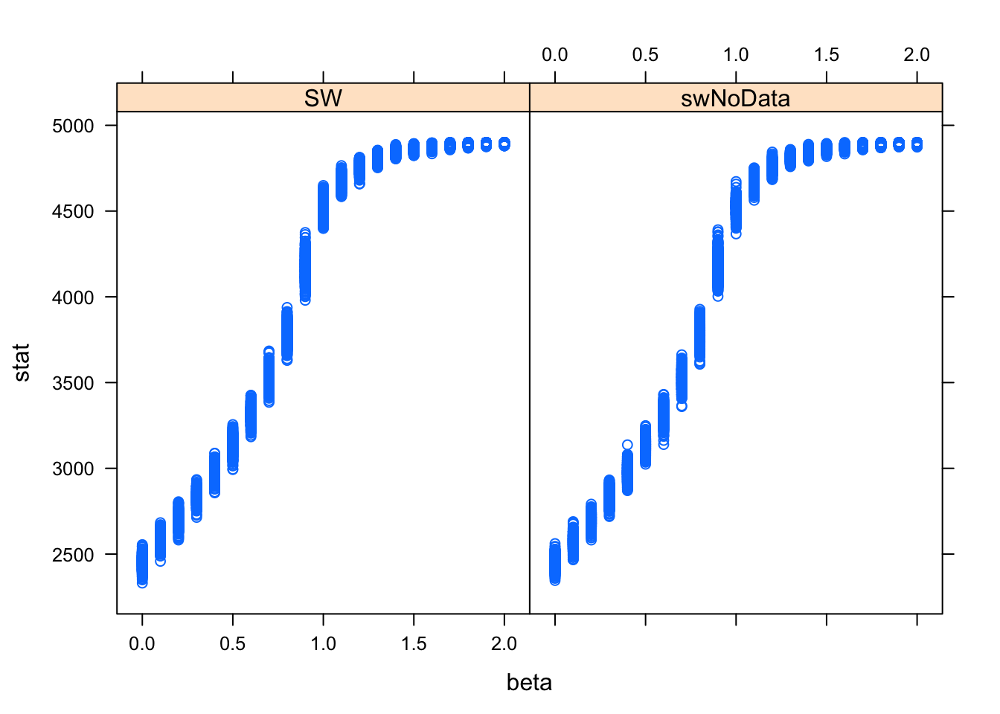

This is the first in a series of posts describing the functions and algorithms that I have implemented in the R package bayesImageS.
Gibbs sampling was originally designed by Geman & Geman (1984) for drawing updates from the Gibbs distribution, hence the name. However, single-site Gibbs sampling exhibits poor mixing due to the posterior correlation between the pixel labels. Thus it is very slow to converge when the correlation (controlled by the inverse temperature \(\beta\)) is high.
The algorithm of Swendsen & Wang (1987) addresses this problem by forming clusters of neighbouring pixels, then updating all of the labels within a cluster to the same value. When simulating from the prior, such as a Potts model without an external field, this algorithm is very efficient.
The SW function in the PottsUtils package is implemented in a combination of R and C. The swNoData function in bayesImageS is implemented using RcppArmadillo, which gives it a speed advantage. It is worth noting that the intention of bayesImageS is not to replace PottsUtils. Rather, an efficient Swendsen-Wang algorithm is used as a building block for implementations of ABC (Grelaud et al., 2009), path sampling (Gelman & Meng, 1998), and the exchange algorithm (Murray et al., 2006). These other algorithms will be covered in future posts.
There are two things that we want to keep track of in this simulation study: the speed of the algorithm and the distribution of the summary statistic. We will be using system.time(..) to measure both CPU and elapsed (wall clock) time taken for the same number of iterations, for a range of inverse temperatures:
beta <- seq(0,2,by=0.1)
tmMx.PU <- tmMx.bIS <- matrix(nrow=length(beta),ncol=2)
rownames(tmMx.PU) <- rownames(tmMx.bIS) <- beta
colnames(tmMx.PU) <- colnames(tmMx.bIS) <- c("user","elapsed")We will discard the first 100 iterations as burn-in and keep the remaining 500.
iter <- 600
burn <- 100
samp.PU <- samp.bIS <- matrix(nrow=length(beta),ncol=iter-burn)The distribution of pixel labels can be summarised by the sufficient statistic of the Potts model:
\[ S(z) = \sum_{i \sim \ell \in \mathscr{N}} \delta(z_i, z_\ell) \]
where \(i \sim \ell \in \mathscr{N}\) are all of the pairs of neighbours in the lattice (ie. the cliques) and \(\delta(u,v)\) is 1 if \(u = v\) and 0 otherwise (the Kronecker delta function). swNoData returns this automatically, but with SW we will need to use the function sufficientStat to calculate the sufficient statistic for the labels.
library(bayesImageS)
library(PottsUtils)##
## Attaching package: 'PottsUtils'## The following objects are masked from 'package:bayesImageS':
##
## getBlocks, getEdges, getNeighborsmask <- matrix(1,50,50)
neigh <- getNeighbors(mask, c(2,2,0,0))
block <- getBlocks(mask, 2)
edges <- getEdges(mask, c(2,2,0,0))
n <- sum(mask)
k <- 2
bcrit <- log(1 + sqrt(k))
maxSS <- nrow(edges)
for (i in 1:length(beta)) {
# PottsUtils
tm <- system.time(result <- SW(iter,n,k,edges,beta=beta[i]))
tmMx.PU[i,"user"] <- tm["user.self"]
tmMx.PU[i,"elapsed"] <- tm["elapsed"]
res <- sufficientStat(result, neigh, block, k)
samp.PU[i,] <- res$sum[(burn+1):iter]
print(paste("PottsUtils::SW",beta[i],tm["elapsed"],median(samp.PU[i,])))
# bayesImageS
tm <- system.time(result <- swNoData(beta[i],k,neigh,block,iter))
tmMx.bIS[i,"user"] <- tm["user.self"]
tmMx.bIS[i,"elapsed"] <- tm["elapsed"]
samp.bIS[i,] <- result$sum[(burn+1):iter]
print(paste("bayesImageS::swNoData",beta[i],tm["elapsed"],median(samp.bIS[i,])))
}## [1] "PottsUtils::SW 0 6.082 2451"
## [1] "bayesImageS::swNoData 0 0.192 2451.5"
## [1] "PottsUtils::SW 0.1 3.614 2573"
## [1] "bayesImageS::swNoData 0.1 0.237 2577"
## [1] "PottsUtils::SW 0.2 3.441 2700"
## [1] "bayesImageS::swNoData 0.2 0.250999999999999 2696"
## [1] "PottsUtils::SW 0.3 3.376 2829"
## [1] "bayesImageS::swNoData 0.3 0.261999999999997 2832"
## [1] "PottsUtils::SW 0.4 3.032 2971"
## [1] "bayesImageS::swNoData 0.4 0.268999999999998 2971"
## [1] "PottsUtils::SW 0.5 2.921 3137"
## [1] "bayesImageS::swNoData 0.5 0.271999999999998 3130"
## [1] "PottsUtils::SW 0.6 2.803 3312"
## [1] "bayesImageS::swNoData 0.6 0.273 3309"
## [1] "PottsUtils::SW 0.7 2.65 3518"
## [1] "bayesImageS::swNoData 0.7 0.270000000000003 3521"
## [1] "PottsUtils::SW 0.8 2.557 3786"
## [1] "bayesImageS::swNoData 0.8 0.268000000000001 3781.5"
## [1] "PottsUtils::SW 0.9 2.20999999999999 4171"
## [1] "bayesImageS::swNoData 0.9 0.246000000000002 4174"
## [1] "PottsUtils::SW 1 2.196 4519"
## [1] "bayesImageS::swNoData 1 0.233000000000004 4506"
## [1] "PottsUtils::SW 1.1 2.066 4677"
## [1] "bayesImageS::swNoData 1.1 0.226999999999997 4680"
## [1] "PottsUtils::SW 1.2 1.944 4760.5"
## [1] "bayesImageS::swNoData 1.2 0.222999999999999 4765"
## [1] "PottsUtils::SW 1.3 1.87 4809"
## [1] "bayesImageS::swNoData 1.3 0.221999999999994 4814"
## [1] "PottsUtils::SW 1.4 2.092 4842"
## [1] "bayesImageS::swNoData 1.4 0.219999999999999 4844"
## [1] "PottsUtils::SW 1.5 1.98699999999999 4863"
## [1] "bayesImageS::swNoData 1.5 0.263999999999996 4862"
## [1] "PottsUtils::SW 1.6 2.057 4876"
## [1] "bayesImageS::swNoData 1.6 0.213999999999999 4875"
## [1] "PottsUtils::SW 1.7 2.015 4885"
## [1] "bayesImageS::swNoData 1.7 0.214999999999996 4883"
## [1] "PottsUtils::SW 1.8 1.903 4889"
## [1] "bayesImageS::swNoData 1.8 0.218000000000004 4890"
## [1] "PottsUtils::SW 1.9 1.912 4893"
## [1] "bayesImageS::swNoData 1.9 0.210000000000001 4893"
## [1] "PottsUtils::SW 2 1.966 4896"
## [1] "bayesImageS::swNoData 2 0.209000000000003 4895"Here is the comparison of elapsed times between the two algorithms (in seconds):
summary(tmMx.PU)## user elapsed
## Min. :2.164 Min. :1.870
## 1st Qu.:2.306 1st Qu.:1.987
## Median :2.487 Median :2.196
## Mean :2.899 Mean :2.604
## 3rd Qu.:3.193 3rd Qu.:2.921
## Max. :5.890 Max. :6.082summary(tmMx.bIS)## user elapsed
## Min. :0.5500 Min. :0.1920
## 1st Qu.:0.7950 1st Qu.:0.2180
## Median :0.8580 Median :0.2330
## Mean :0.8626 Mean :0.2379
## 3rd Qu.:0.9500 3rd Qu.:0.2640
## Max. :1.0210 Max. :0.2730boxplot(tmMx.PU[,"elapsed"],tmMx.bIS[,"elapsed"],ylab="seconds elapsed",names=c("SW","swNoData")) On average, swNoData using RcppArmadillo is seven times faster than SW.
library(lattice)
s_z <- c(samp.PU,samp.bIS)
s_x <- rep(beta,times=iter-burn)
s_a <- rep(1:2,each=length(beta)*(iter-burn))
s.frame <- data.frame(s_z,c(s_x,s_x),s_a)
names(s.frame) <- c("stat","beta","alg")
s.frame$alg <- factor(s_a,labels=c("SW","swNoData"))
xyplot(stat ~ beta | alg, data=s.frame)
plot(c(s_x,s_x),s_z,pch=s_a,xlab=expression(beta),ylab=expression(S(z)))
abline(v=bcrit,col="red")The overlap between the two distributions is almost complete, although it is a bit tricky to verify that statistically. The relationship between \(beta\) and \(S(z)\) is nonlinear and heteroskedastic.
rowMeans(samp.bIS) - rowMeans(samp.PU)## [1] -0.298 3.730 -2.312 3.868 -1.000 -6.564 0.198 0.846
## [9] -2.084 1.202 -13.370 0.912 2.766 4.762 1.114 -0.768
## [17] -1.266 -1.208 0.508 0.406 -0.974apply(samp.PU, 1, sd)## [1] 33.918284 37.349134 35.183625 36.601219 36.849590 40.164641 46.253912
## [8] 45.087912 54.752701 68.239653 48.294698 32.422172 24.500189 19.205551
## [15] 17.003369 11.961979 10.502900 8.504574 6.286805 5.829919 4.620250apply(samp.bIS, 1, sd)## [1] 34.296252 34.263141 34.882449 37.700925 38.901764 39.318670 45.163635
## [8] 48.796789 56.351898 66.328585 49.008903 30.522084 24.942266 20.276591
## [15] 16.990411 12.147546 10.364673 8.828958 6.287668 5.559696 5.319567s.frame$beta <- factor(c(s_x,s_x))
s.fit <- aov(stat ~ alg + beta, data=s.frame)
summary(s.fit)## Df Sum Sq Mean Sq F value Pr(>F)
## alg 1 1.082e+03 1082 9.050e-01 0.342
## beta 20 1.744e+10 871789885 7.292e+05 <2e-16 ***
## Residuals 20978 2.508e+07 1196
## ---
## Signif. codes: 0 '***' 0.001 '**' 0.01 '*' 0.05 '.' 0.1 ' ' 1TukeyHSD(s.fit,which="alg")## Tukey multiple comparisons of means
## 95% family-wise confidence level
##
## Fit: aov(formula = stat ~ alg + beta, data = s.frame)
##
## $alg
## diff lwr upr p adj
## swNoData-SW -0.4539048 -1.389276 0.4814666 0.3415339Gelman, A. & Meng, X-L (1998) Simulating normalizing constants: from importance sampling to bridge sampling to path sampling
Geman, S. and Geman, D. (1984) Stochastic relaxation, Gibbs distributions and the Bayesian restoration of images
Grelaud, A., Robert, C.P., Marin, J-M, Rodolphe, F. & Taly, J-F (2009) ABC likelihood-free methods for model choice in Gibbs random fields
Murray, I., Ghahramani, Z. & MacKay, D.J.C. (2006) MCMC for Doubly-intractable Distributions
Swendsen, R.H. & Wang, J-S (1987) Nonuniversal critical dynamics in Monte Carlo simulations